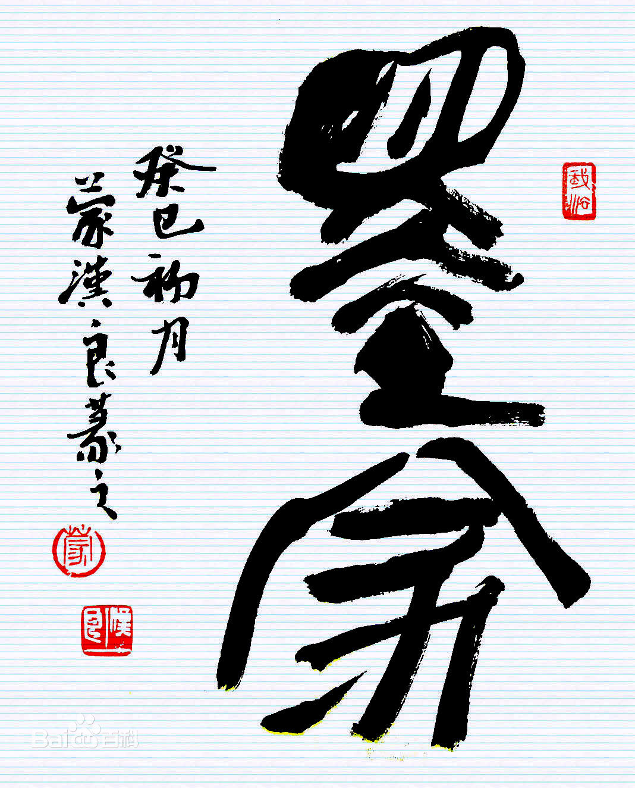
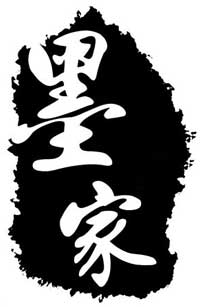
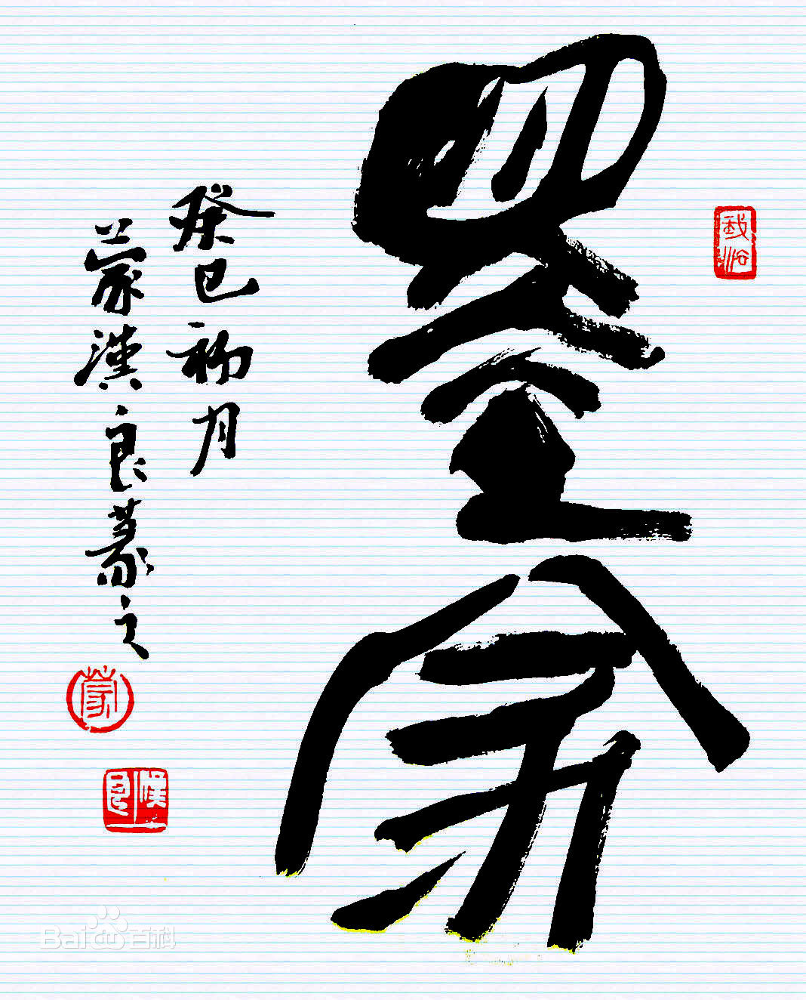
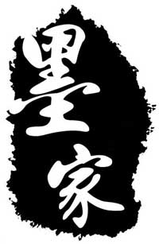

墨子
墨子（生卒年不详） ，名翟（dí），东周春秋末期战国初期宋国人，
一说鲁阳人 ， 一说滕国人。墨子是宋国贵族目夷的后代 ，生前担任宋国大夫。他是墨家学派的创始人，
也是战国时期著名的思想家、教育家、科学家、军事家。 墨子是中国历史上唯一一个农民出身的哲学家，
墨子创立了墨家学说，墨家在先秦时期影响很大， 与儒家并称“显学”。他提出了“兼爱”、“非攻”、“尚贤”、
“尚同”、“天志”、“明鬼”、“非命”、“非乐”、 “节葬”、“节用”等观点。以兼爱为核心，以节用、尚贤为支点。
墨子在战国时期创立了以几何学、物理学、 光学为突出成就的一整套科学理论。在当时的百家争鸣，
有“非儒即墨”之称。墨子死后，墨家分为相里氏之墨、 相夫氏之墨、邓陵氏之墨三个学派。
其弟子根据墨子生平事迹的史料，收集其语录，完成了《墨子》 一书传世。
墨子的先祖是殷商王室他是宋国君主宋襄公的哥哥目夷的后代目夷生前是
宋襄公的大司马,后来他的后代因故从贵族降为平民。后简略为墨姓。 约在春秋末年周敬王四十年
（约公元前480年，一说公元前476年，墨氏喜添贵子，墨子应运而生。虽然其先祖是贵族，
但墨子却是中国历史上唯一一个农民出身的哲学家.
墨家是中国东周时期的哲学派别，诸子百家之一，与孔子所代表的儒家、
老子所代表的道家共同构成了中国古代三大哲学体系， 墨家被古代大家认为道家的分支，深受道家影响。
墨家约产生于战国时期。创始人为墨翟（墨子）。
墨家是一个纪律严密的学术团体，其首领称“巨子”， 其成员到各国为官必须推行墨家主张，
所得俸禄亦须向团体奉献。墨家学派有前后期之分：前期思想主要涉及社会政治、 伦理及认识论问题，
关注现世战乱；后期墨家在逻辑学方面有重要贡献，开始向科学研究领域靠拢。
墨家的主要思想主张是：人与人之间平等的相爱（兼爱），
反对侵略战争（非攻），推崇节约、反对铺张浪费（节用） ，重视继承前人的文化财富（明鬼），
掌握自然规律（天志）等。
因为墨家思想独有的政治属性，兼之西汉汉武帝“罢黜百家，
独尊儒术”的官学勾结政策，墨家不断遭到打压， 并逐渐失去了存身的现实基础，墨家思想在中国逐渐灭绝；
直到清末民初，学者们才从故纸堆中重新挖出墨家， 并发现其进步性。近年来经过一些新墨者的努力，
墨家学说中的一些有益观点开始进入人们的视野。
 



墨家思想
完全的、不分彼此，无差别的博爱，与儒家的亲亲相对反，将父兄慈、 子弟孝 、尊长友、年幼悌等的亲人对待方式，扩展到其他陌生人身上。 兼爱同样是用了建造和平， 平息惨斗。兼的内容重点在劝爱且禁恶。父慈、子孝、兄友、弟悌，用三纲五常，礼， 恕等等儒家理论来支持。恕就是禁止讨厌，礼就是劝进善心。
反对侵略战争，战争对于败者的伤害及，伤人命、损其才， 是没有意义的破坏行动。而对于胜方而言，仅仅是获得了数座城池与税收， 但总的来说伤害与损失也是巨大的，所以战争是没有意义的行为。 墨子虽提出正义的战争与不正义的战争， 但其实只是为了方便推广学说而采取的策略，实际是个典型的和平主义者。
认为贵族浪费，过度享受导致老百姓群起为盗。观察到万物节则阴阳和， 以此劝说贵族，节约开销
希望以神鬼之说使君主警惕，杀无辜者得不祥， 不可以因为一些怒气而杀害臣民的生命。所以和无神论者一样的不相信巫术，不信有命运， 却相信人死后会有灵魂 从《史记》记述秦末陈胜吴广直到项羽旧贵族，都没有祭祀鬼神， 祷告上天。可见墨家鬼神说在战国末年是彻底粉碎了